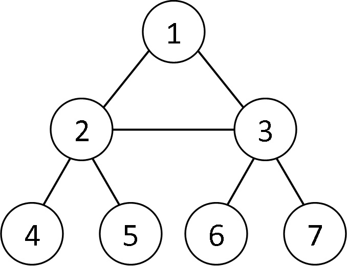

Запись графа
Существует множество задач и алгоритмов на графы, но как их представить в компьютере? Для хранении графа можно использовать матрицу смежности, но тогда нам потребуется много памяти
и сложность обхода такой матрицы будет n^2. Поэтому применяется хранение графа с помощью массива структур.
Каждый элемент массива структуры является описанием одной из
вершин графа, причем индекс элемента равен номеру вершины - 1, так как в Си нумерация начинается с 0. Например описание вершины 3 будет храниться в элементе массива с индексом 2.
Навигация по странице:
1. Что будет храниться в структуре?
2. Добавление путей
3. Выделение памяти
4. Ввод графа, полный код
5. Задача на граф с решением
Что будет храниться в структуре?
Здесь только зависит от вас или от задачи, но в любом случае нужно будет хранить связь(ребра) между вершинами. Для некоторых задач важны еще и предки вершины, то есть вершины, из которых мы можем прийти в данную. Давайте рассмотрим структуру, в которой будут храниться такие данные:
1) пути из этой вершины;
2) количество путей;
3) предки этой вершины;
4) количество предков.
Давать именна переменным можно разные. В данном случае, вершины, из которых мы можем попасть в вершину v, будут храниться в динамическом массиве ancestors(предки), а пути из вершины v будут храниться в динамическом массиве paths(пути). Вот так будет выглядит такая структура:
struct graph { int* paths; // пути из вершины int number_of_paths; // кол-во путей int* ancestors; // предки вершины int number_of_ancestors; // кол-во предков };
Добавление путей
Для ввода графа указываются количество вершин и количество ребер. Каждое ребро описывается двумя вершинами. Эти вершины называются концевыми точками или концами ребра.
Существуют разные графы и их запись тоже будет отличаться. Для начала нам нужно определить ориентированный ли граф или нет.
Ориентированный граф - это граф, все ребра которого имеют направление, то есть по таким ребрам можно ходить только в одном направлении.
Неориентированный граф - это граф, все ребра
которого не имеют направления, то есть по таким ребрам можно идти в обоих направлениях.
Пусть между вершинами v и u есть ребро
1) Для неориентированного графа нам нужно добавть путь не только из v в u,
но и наоборот, так как по такому ребру можно ходить в двух направлениях,
2) Для ориентированного графа нам нужно добавить путь только в одну сторону, например только из v в u.
Давайте запишем одно ребро между вершинами v и u в неориентированном графе:
A[v - 1].paths[A[v - 1].number_of_paths] = u - 1; A[v - 1].number_of_paths++; A[u - 1].paths[A[u - 1].number_of_paths] = v - 1; A[u - 1].number_of_paths++;
С массивом предков, если в задаче они будут нужны, выполняем такие же действия.
Для ориентированного графа необходимы только первые две строчки при условии, что ребро имеет направление из v в u. Тогда для вершины u предком будет являться вершина v.
Не всегда в задаче нам нужны предки вершин, например в обходе в ширину. Перед написанием кода вы уже должны знать какие переменные точно будут храниться в вашей структуре, иначе можете сделать много лишней работы.
Выделение памяти
Так как изначально мы не знаем сколько у каждой вершины путей, то придется выделять память под хранение динамически. В начале программы мы выделяем только один элемент массива путей для каждой
вершины. Выделяем память под один элемент массива с помощью функции malloc для любой вершины вот так:
A[i].paths = malloc(sizeof(int)); i - это индекс любой вершины в массиве структур
И только при вводе связи между двумя вершинами мы дополнительно с помощью функции realloc выделяем еще один элемент под путь.
Выделение памяти для дополнительного элемента массива путей вершины v:
A[v - 1].paths = realloc(A[v - 1].paths, (A[v - 1].number_of_paths + 1) * sizeof(int));
Для любых подобных массивов выделяем память аналогично.
Подробнее про динамическое выделение памяти можно посмореть в разделе изучения.
Ввод графа, полный код
Давайте соберем все вместе и посмортим на весь ввод графа в программе. Ввод неориентированного графа с n вершинами и с m ребер:
1
2
3
4
5
6
7
8
9
10
11
12
13
14
15
16
17
18
19
20
21
22
23
24
25
26
27
28
#define _CRT_SECURE_NO_WARNINGS #include<stdio.h> #include<stdlib.h> struct graph { int* paths; int number_of_paths; }; int main() { int n, m, i, v, u; struct graph A[100]; scanf("%i%i", &n, &m); for (i = 0; i < n; i++) { // начальная инициализация A[i].paths = malloc(sizeof(int)); A[i].number_of_paths = 0; } for (i = 0; i < m; i++) { // добавление путей scanf("%i%i", &v, &u); A[v - 1].paths = realloc(A[v - 1].paths, (A[v - 1].number_of_paths + 1) * sizeof(int)); A[u - 1].paths = realloc(A[u - 1].paths, (A[u - 1].number_of_paths + 1) * sizeof(int)); A[v - 1].paths[A[v - 1].number_of_paths] = u - 1; A[v - 1].number_of_paths++; A[u - 1].paths[A[u - 1].number_of_paths] = v - 1; A[u - 1].number_of_paths++; } return 0; }
Мы храним только пути из каждой вершины. Если требуется хранить еще и предков вершин, то таким же методом заполняем массив уже для предков.
Задача:
Дан неориентированный граф с n вершинами, котрые пронумерованные от 1 до n и с m ребрами. Необходимо вывести номер вершины, у которой больше всего путей в вершины большие по номеру.
Входные данные:
Первая строка содержит целые числа n (2 ≤ n ≤ 10^5) и m(1 ≤ m ≤ 10^5) - количество вершин и количество ребер соответственно.
В каждой из следующих m строк записаны числа v и u - вершины, между которыми есть ребро.
Выходные данные:
Вывести ответ.
Пример:
| Ввод | Вывод |
| 7 7 1 2 1 3 2 4 5 2 3 2 6 3 3 7 |
2 |
Пояснение к примеру
Граф из примера выглядит так:
На рисунке видно, что у вершины два три путя к более большим по номеру вершинам. У всех остальных меньше.
Решение
Давайте соберем всю информацию вместе. Для решения нам понадобиться только знать пути из каждой вершины. В отдельном цикле нужно пробегать весь массив путей и сравнивать ее номер с номерами вершин, в которые мы можем попасть из нее.
Код на Си:
1
2
3
4
5
6
7
8
9
10
11
12
13
14
15
16
17
18
19
20
21
22
23
24
25
26
27
28
29
30
31
32
33
34
35
36
37
38
39
40
41
42
#define _CRT_SECURE_NO_WARNINGS #include<stdio.h> #include<stdlib.h> struct graph { int* paths; int number_of_paths; }; int main() { int n, m, i, j, v, u, max, num, ans; struct graph A[100]; scanf("%i%i", &n, &m); for (i = 0; i < n; i++) { // начальная инициализация A[i].number_of_paths = 0; A[i].paths = malloc(sizeof(int)); } for (i = 0; i < m; i++) { // добавление путей scanf("%i%i", &v, &u); A[v - 1].paths = realloc(A[v - 1].paths, (A[v - 1].number_of_paths + 1) * sizeof(int)); A[u - 1].paths = realloc(A[u - 1].paths, (A[u - 1].number_of_paths + 1) * sizeof(int)); A[v - 1].paths[A[v - 1].number_of_paths] = u - 1; A[v - 1].number_of_paths++; A[u - 1].paths[A[u - 1].number_of_paths] = v - 1; A[u - 1].number_of_paths++; } max = 0; for (i = 0; i < n; i++) { // поиск ответа num = 0; for (j = 0; j < A[i].number_of_paths; j++) { if (A[i].paths[j] > i) { num++; } } if (max < num) { max = num; ans = i + 1; } } printf("%i", ans); return 0; }
Другие задачи на графы
Графы очень разнообразная и интересаная тема. Вы можете порешать другие задачи в разделе задачи на графы
Code.C
© Copyright Павел Калашников 2021
обратная связь code.c04@mail.ru